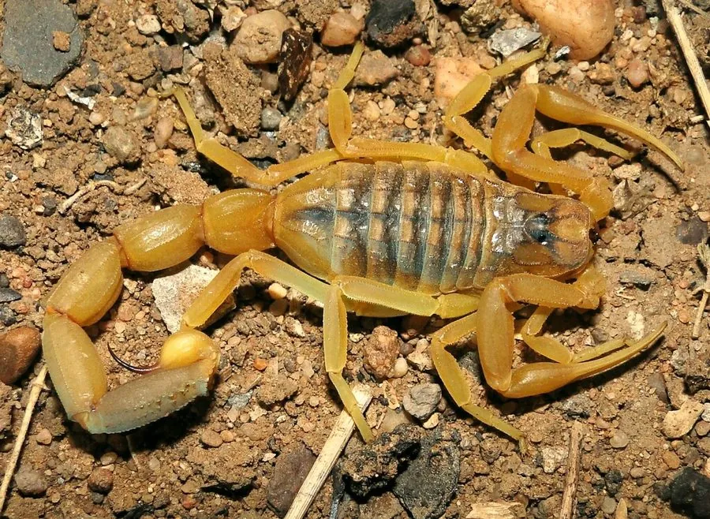

蛛形动物 · 动物界
以色列金蝎 Leiurus quinquestriatus

中东与北非的剧毒蝎类，体色金黄、体型不大，毒液毒性很强，被螫后可出现剧痛和全身症状，需立即就医。
- 分类
- 门节肢动物门纲蛛形纲目蝎目科钳蝎科属金蝎属
- 栖息环境
- 中东与北非的荒漠、半荒漠、干旱草原的石块下与土缝
- 地理分布
- 中东和北非的干旱地区
- 保护级别
- IUCN 暂无评估；非中国原产，在中国无保护级别
物种志
以色列金蝎体长 5–10 厘米，身体呈淡黄、金黄或黄褐色，双螯细长，尾节较粗，毒针弯曲而尖锐，整体外形纤细，与粗壮的帝王蝎形成鲜明对比。它行动迅速，是中东和北非荒漠地区常见的蝎类。
它分布于中东和北非的荒漠、半荒漠与干旱草原，栖息于石块下、土缝和废弃建筑中，夜间捕食昆虫、蜘蛛和其他小型节肢动物。它是卵胎生蝎类，妊娠约 6 个月，每胎产 20–30 只幼蝎，幼蝎出生后爬上母背生活数日。以色列金蝎毒液毒性很强，被螫后局部剧痛，可能出现肌肉痉挛、心悸、呼吸困难等全身症状，须立即就医；在野外遇到时应保持距离，不要徒手翻动石块或鞋具。
形态与习性
- 食性昆虫、蜘蛛和其他小型节肢动物
- 体长5–10 cm
- 寿命约 5–8 年
- 繁殖卵胎生，妊娠约 6 个月，每胎 20–30 只
- 活动节律夜行性，白天藏在石块土缝中
- 毒性毒性很强，被螫须立即就医
趣味知识
- 以色列金蝎体型不大，但毒液毒性很强，是世界上最危险的蝎类之一。
- 它通体金黄、双螯细长，与粗壮的帝王蝎外形差异很大。
- 在它的分布区，夜间穿鞋前应先检查鞋内，避免被螫伤。